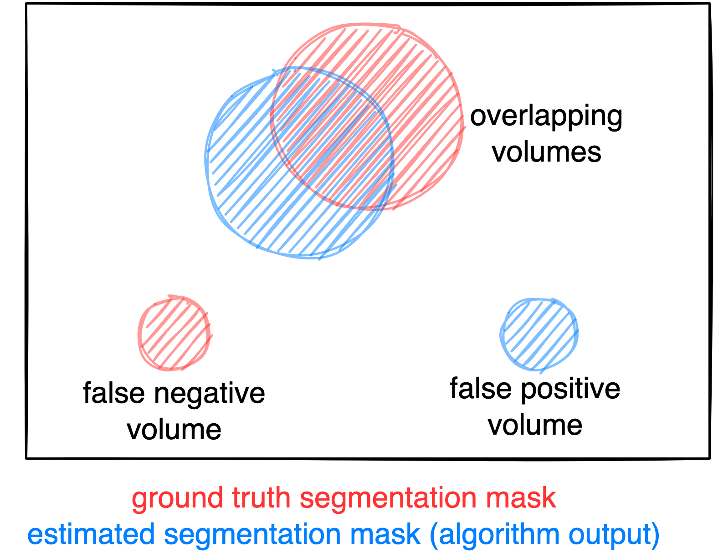
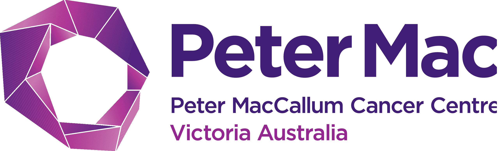

autoPET-V
The human-AI frontier
Introduction
We invite you to participate in the fifth edition of the autoPET Challenge, focusing on interactive, clinician-in-the-loop lesion segmentation in whole-body PET/CT.
Positron Emission Tomography combined with Computed Tomography (PET/CT) plays a central role in oncologic imaging, supporting diagnosis, staging, therapy response assessment, and disease monitoring. In current clinical practice, radiologists assess tumor burden by visually inspecting PET/CT scans and identifying changes in lesion size and distribution using standardized criteria. Despite the substantial effort required for this manual process, only a limited subset of lesions is typically evaluated using simplified one-dimensional measurements. As a result, a large fraction of the rich quantitative and spatial information contained in PET imaging remains underutilized. In addition, manual assessment is subject to inter-observer variability and may not fully capture complex disease patterns.
Automated lesion detection and segmentation have the potential to enable more comprehensive and reproducible analysis of tumor burden. While recent advances in deep learning have led to significant progress in automated whole-body PET/CT segmentation, important challenges remain. These include limited robustness to domain shifts across scanners, tracers, and centers, difficulties in distinguishing physiological uptake from pathological lesions, and reduced performance in complex or low-contrast cases. Most importantly, fully automated solutions often fail to align with clinical expectations, where expert interpretation and correction remain essential.
In clinical reality, lesion segmentation is therefore not a purely automatic task, but an interactive and iterative process in which clinicians refine and correct algorithmic predictions. autoPET V embraces this paradigm shift by introducing a benchmark for interactive lesion segmentation in whole-body PET/CT. Participants are asked to develop algorithms that generate an initial segmentation and iteratively improve it in response to sparse corrective input provided during inference in the form of scribbles targeting false-positive and false-negative regions.
A central feature of autoPET V is the evaluation under two complementary interaction regimes. First, a standardized simulated-interaction setting enables scalable and fully reproducible benchmarking by generating corrective scribbles in a controlled manner. Second, a clinician-driven interaction setting incorporates real expert annotations, capturing realistic human–AI correction behavior in clinical workflows. All submitted methods are evaluated consistently across both regimes in a newly harmonized multi-center test cohort, allowing the challenge to assess both algorithmic adaptability and clinical relevance.
The autoPET V challenge is hosted at MICCAI 2026 in collaboration with the European Society of Radiology (ESR) under "AI-based assessment of PET imaging for oncology" and supported by the European Society for hybrid, molecular and translational imaging (ESHI). The challenge is part of the autoPET series and the successor of autoPET, autoPET II, autoPET III, and autoPET/CT IV.
Grand Challenge
More information about the challenge can be found on Grand Challenge.
Task
autoPET V defines a single unified task: interactive lesion segmentation in whole-body PET/CT. Participants develop algorithms that:
- Generate an initial segmentation of tracer-avid tumor lesions
- Iteratively refine this segmentation based on sparse corrective input during inference
- novel model architectures
- interaction-aware or prompt-based methods
- data-centric pipelines (pre-/post-processing)
🎯 Goal
The goal is to develop algorithms that are:
- Accurate → high-quality lesion segmentation
- Robust → generalize across tracers, centers, and acquisition conditions
- Adaptive → efficiently incorporate human corrective input
🔄 Interactive Segmentation
The task models a realistic clinical workflow in which automated segmentations are iteratively refined through human input. Each method is evaluated in an interactive loop:
- The algorithm produces an initial lesion segmentation
- Corrective input is provided in the form of sparse scribbles targeting:
- false-positive regions (over-segmentation)
- false-negative regions (missed lesions)
- The algorithm updates its prediction based on all previously provided input
Category 1: Simulated Interaction
- Scribbles are generated automatically based on prediction errors
- Fully reproducible and standardized across submissions
- Fixed number of interaction steps per case
Category 2: Clinician-Driven Interaction
- Scribbles are provided by expert readers
- Reflect realistic clinical correction behavior
- Variable number of interactions per case
Each submission is evaluated under both regimes and automatically participates in both award categories.
📤 Input / Output
Input per interaction step:
- CT image (MHA file)
- PET image (MHA file)
- Corrective scribbles in foreground and background (JSON file)
- Lesion segmentation mask (MHA file)
Database
Single-staging whole-body FDG/PSMA PET/CT
ℹ️ Information
The FDG cohort comprises 1014 studies of 501 patients diagnosed with histologically proven malignant melanoma, lymphoma, or lung cancer, along with 513 negative control patients. The PSMA cohort includes pre- and/or post-therapeutic PET/CT images of male individuals with prostate carcinoma, encompassing images with (537) and without PSMA-avid tumor lesions (60). Notably, the training datasets exhibit distinct age distributions: the FDG UKT cohort spans 570 male patients (mean age: 60; std: 16) and 444 female patients (mean age: 58; std: 16), whereas the PSMA MUC cohort tends to be older, with 378 male patients (mean age: 71; std: 8). Additionally, there are variations in imaging conditions between the FDG UKT and PSMA MUC cohorts, particularly regarding the types and number of PET/CT scanners utilized for acquisition. The PSMA MUC dataset was acquired using three different scanner types (Siemens Biograph 64-4R TruePoint, Siemens Biograph mCT Flow 20, and GE Discovery 690), whereas the FDG UKT dataset was acquired using a single scanner (Siemens Biograph mCT).
📥 Download
We provide the merged data as NIfTI in nnUNet format which can be downloaded from fdat (120GB):
The download will contain the resampled FDG and PSMA data as NiFTI files. It also contains the files obtained by running the nnUNet fingerprint extractor and a splits file which we use to design/train our baselines.
🎥 PET/CT acquisition protocol
FDG dataset: Patients fasted at least 6 h prior to the injection of approximately 350 MBq 18F-FDG. Whole-body PET/CT images were acquired using a Biograph mCT PET/CT scanner (Siemens, Healthcare GmbH, Erlangen, Germany) and were initiated approximately 60 min after intravenous tracer administration. Diagnostic CT scans of the neck, thorax, abdomen, and pelvis (200 reference mAs; 120 kV) were acquired 90 sec after intravenous injection of a contrast agent (90-120 ml Ultravist 370, Bayer AG) or without contrast agent (in case of existing contraindications). PET Images were reconstructed iteratively (three iterations, 21 subsets) with Gaussian post-reconstruction smoothing (2 mm full width at half-maximum). Slice thickness on contrast-enhanced CT was 2 or 3 mm.
PSMA dataset: Examinations were acquired on different PET/CT scanners (Siemens Biograph 64-4R TruePoint, Siemens Biograph mCT Flow 20, and GE Discovery 690). The imaging protocol mainly consisted of a diagnostic CT scan from the skull base to the mid-thigh using the following scan parameters: reference tube current exposure time product of 143 mAs (mean); tube voltage of 100kV or 120 kV for most cases, slice thickness of 3 mm for Biograph 64 and Biograph mCT, and 2.5 mm for GE Discovery 690 (except for 3 cases with 5 mm). Intravenous contrast enhancement was used in most studies (571), except for patients with contraindications (26). The whole-body PSMA-PET scan was acquired on average around 74 minutes after intravenous injection of 246 MBq 18F-PSMA (mean, 369 studies) or 214 MBq 68Ga-PSMA (mean, 228 studies), respectively. The PET data was reconstructed with attenuation correction derived from corresponding CT data. For GE Discovery 690 the reconstruction process employed a VPFX algorithm with voxel size 2.73 mm × 2.73 mm × 3.27 mm, for Siemens Biograph mCT Flow 20 a PSF+TOF algorithm (2 iterations, 21 subsets) with voxel size 4.07 mm × 4.07 mm × 3.00 mm, and for Siemens Biograph 64-4R TruePoint a PSF algorithm (3 iterations, 21 subsets) with voxel size 4.07 mm × 4.07 mm × 5.00 mm.
⌛ Training cohort
Training cases: 1,014 FDG studies (900 patients) and 597 PSMA studies (378 patients)
FDG training data consists of 1,014 studies acquired at the University Hospital Tübingen and is made publicly available on TCIA in DICOM format:
and on fdat in NIfTI format:
PSMA training data consists of 597 studies acquired at the LMU University Hospital Munich and will be made publicly available on TCIA in DICOM format. The combined PSMA and FDG data is available on fdat in NIfTI format:
A case consists of one 3D whole-body FDG-PET or PSMA-PET volume, one corresponding 3D whole-body CT volume, one 3D binary mask of manually segmented tumor lesions on PET of the size of the PET volume, and pre-simulated corrective scribbles. CT and PET were acquired simultaneously on a single PET/CT scanner in one session; thus PET and CT are anatomically aligned up to minor shifts due to physiological motion. The pre-simulated clicks for training are provided in Github together with a script for further (parametrized) click simulations.
If you use this data, please cite:
Gatidis S, Kuestner T. A whole-body FDG-PET/CT dataset with manually annotated tumor lesions (FDG-PET-CT-Lesions) [Dataset]. The Cancer Imaging Archive, 2022. DOI: 10.7937/gkr0-xv29
Jeblick, K., et al. A whole-body PSMA-PET/CT dataset with manually annotated tumor lesions (PSMA-PET-CT-Lesions) (Version 1) [Dataset]. The Cancer Imaging Archive, 2024. DOI: 10.7937/r7ep-3x37
🗃️ Data structure
|--- imagesTr
|--- tracer_patient1_study1_0000.nii.gz (CT image resampled to PET)
|--- tracer_patient1_study1_0001.nii.gz (PET image in SUV)
|--- ...
|--- labelsTr
|--- tracer_patient1_study1.nii.gz (manual annotations of tumor lesions)
|--- dataset.json (nnUNet dataset description)
|--- dataset_fingerprint.json (nnUNet dataset fingerprint)
|--- splits_final.json (reference 5fold split)
|--- psma_metadata.csv (metadata csv for psma)
|--- fdg_metadata.csv (original metadata csv for fdg)
⚙️ Data pre-processing
Please note that the submission and evaluation interfaces provided by Grand Challenge are working with .mha data. Hence, you will need to read the test images in your submission from an .mha file. We already provide interfaces and code for this in the baseline algorithms.
✒ Annotation
FDG PET/CT training and test data from UKT was annotated by a Radiologist with 10 years of experience in Hybrid Imaging and experience in machine learning research. FDG PET/CT test data from LMU was annotated by a radiologist with 8 years of experience in hybrid imaging. PSMA PET/CT training and test data from LMU as well as PSMA PET/CT test data from UKT was annotated by a single reader and reviewed by a radiologist with 5 years of experience in hybrid imaging.
The following annotation protocol was defined:
Step 1: Identification of tracer-avid tumor lesions by visual assessment of PET and CT information together with the clinical examination reports.
Step 2: Manual free-hand segmentation of identified lesions in axial slices.
DeepPSMA
ℹ️ Information
autoPET V aligns with the DeepPSMA challenge, which provides a multi-center whole-body PSMA PET/CT (a mix of 68Ga-PSMA-617 and 18F-DCFPyL) cohort in 100 patients acquired under clinically routine conditions for prostate cancer imaging. DeepPSMA data encompass scans from different PET/CT systems and PSMA tracers, with expert-annotated prostate cancer lesions and a wide range of disease burden and physiological uptake patterns. Imaging protocols and reconstruction follow standard clinical practice, enabling complementary coverage of PSMA-specific uptake characteristics and scanner variability.
📥 Download
DeepPSMA is available in NIfTI format:
🎥 PET/CT acquisition protocol
Image data are acquired on standard diagnostic PET/CT systems, predominantly including GE Discovery 710 & 690 PET/CTs, Siemens Biograph PET/CT, and Siemens Vision 600 PET/CT. Whole-body (predominantly vertex to thighs) PET images with low-dose CT component for attenuation correction and anatomical localization. PET images reconstructed with standard corrections EANM EARL-compliant resolution recovery settings.
⌛ Training cohort
Training cases: 100 studies (100 patients)
🗃️ Data structure
For each case, a subdirectory for the two tracers with relevant image data and annotations are given (CT, PET in units of SUV, and Total Tumor Burden). The threshold used for contouring each PET series is given in the threshold.json file.
|--- train_0001
|--- PSMA
|--- CT.nii.gz
|--- PET.nii.gz
|--- TTB.nii.gz
|--- threshold.json
|--- totseg_24.nii.gz
|--- rigid.tfm (FDG to PSMA)
|--- FDG
|--- CT.nii.gz
|--- PET.nii.gz
|--- TTB.nii.gz
|--- threshold.json
|--- totseg_24.nii.gz
|--- rigid.tfm (PSMA to FDG)
|--- train_0002
|--- train_0003
...
⚙️ Data pre-processing
Please refer to the DeepPSMA baseline algorithm for further information on data pre-processing and usage.
✒ Annotation
Images are contoured based on a fixed SUV threshold per scan. All PSMA PET/CTs utilise SUV≥3 while FDG PET/CT images use a liver-based threshold (generally Liver Mean + 2×SD). The designated threshold for each study is provided with the image data. Subsequently, determination of malignant versus physiological areas of tracer avidity has been manually annotated by an expert nuclear medicine physician with 5 or more years of specialisation.
Longitudinal CT screening (auxiliary data)
ℹ️ Information
In the context of this challenge, the longitudinal CT dataset is provided as optional auxiliary data. It is not part of the primary evaluation task and is not explicitly assessed. Participants may use this data at their discretion (e.g. for pretraining, feature learning, or data-centric approaches), but its use is neither required nor directly evaluated for the PET/CT segmentation task.
The cohort consists of melanoma patients undergoing longitudinal CT screening examinations in an oncologic context for diagnosis, staging, or therapy response assessment. The CT cohort comprises whole-body imaging in 300 patients (female: 170, mean age: 64y, std age: 15y) of two imaging timepoints: baseline staging, and follow-up scans after therapy treatment. Training data was acquired at a single site (UKT).
📥 Download
We provide the data as NIfTI format which can be downloaded from fdat (54GB):
🎥 CT acquisition protocol
Patients were scanned with the inhouse whole-body staging protocol for a scan field from skull base to the middle of the femur with patients laid in a supine position, arms raised above the head. Scanning was performed during the portal-venous phase after administration of body-weight adapted contrast medium through the cubital vein. Attenuation-based tube current modulation (CARE Dose, reference mAs 240) and tube voltage (120 kV) were applied. The following scan parameters were used:
SOMATOM Force: collimation 128 × 0.6 mm, rotation time 0.5 s, pitch 0.6
Sensation64: collimation 64 × 0.6 mm, rotation time 0.5 s, pitch 0.6
SOMATOM Definition Flash: collimation 128 × 0.6 mm, rotation time 0.5 s, pitch 1.0
SOMATOM Definition AS: collimation 64 × 0.6 mm, rotation time 0.5 s, pitch 0.6
Biograph128: collimation 128 × 0.6 mm, rotation time 0.5 s, pitch 0.8
Slice thickness as well as increment were set to 3 mm. A medium smooth kernel was used for image reconstruction.
⌛ Training cohort
Training cases: 300 studies (300 patients)
Annotated longitudinal CT of two imaging time points in 300 studies was acquired at the University Hospital Tübingen and is made publicly available on fdat in NIfTI format:
✒ Annotation
All data were manually annotated by two experienced radiologists. To this end, tumor lesions were manually segmented on the CT image data using dedicated software.
The following annotation protocol was defined:
Step 1: Identification of tumor lesions by visual assessment of CT information together with the clinical examination reports.
Step 2: Manual free-hand segmentation of identified lesions in axial slices.
Step 3: Baseline and follow-up segmentations are viewed side-by-side to mark the matching lesions.
🚧 Preliminary test set
For the self-evaluation of participating pipelines, we provide access to a preliminary test set. The preliminary test set does not reflect the final test set. Algorithm optimization on the preliminary test set will not yield satisfactory results on the final test set!
The access to this preliminary set is restricted and only possible through the docker containers submitted to the challenge, and only available for a limited time during the competition. The purpose is that participants can check the implementation and sanity of their approaches.
📊 Final test set
The final test set consists of 200 whole-body PET/CT studies collected from four international centers: University Hospital Tübingen, Ludwig-Maximilians-University Munich, Peter MacCallum Cancer Centre, and University Hospital Essen. The cohort is designed to evaluate generalization, robustness, and interaction behavior under clinically realistic conditions.
- Total: 200 studies (50 cases per center)
- Cases include a broad spectrum of disease presentations, including lesion-present cases with varying tumor burden, lesion-absent or low-uptake studies, and clinically challenging cases with ambiguous or physiological uptake
To ensure fair evaluation, detailed information on tracer distribution, acquisition parameters, and case composition will not be disclosed prior to the challenge deadline.
Evaluation
Evaluation will be performed on held-out test cases. The challenge focuses on assessing both segmentation accuracy and interaction efficiency in an interactive human–AI setting. Performance is evaluated using two complementary metrics:
- Dice Score (DSC): Measures voxel-level overlap between predicted and ground-truth lesion segmentation.
- Detection–Matching Metric (DMM): Measures instance-level detection performance by assessing whether predicted lesions match ground-truth lesions. This metric explicitly evaluates the ability to correctly identify individual lesions, independent of voxel overlap.

Figure: Example for the evaluation. The Dice score is calculated to measure the correct overlap between predicted lesion segmentation (blue) and ground truth (red). Additionally special emphasis is put on false negatives by measuring their volume (i.e. entirely missed lesions) and on false positives by measuring their volume (i.e. large false positive volumes like brain or bladder will result in a low score).
🔄 Interactive Evaluation
Metrics are evaluated iteratively over the interaction process, where models receive corrective scribbles and update their predictions step-by-step. Performance is tracked across interaction steps and summarized using area-under-the-curve (AUC) formulations:
- AUC-Dice → measures how efficiently segmentation quality improves
- AUC-DMM → measures how efficiently lesion detection improves
📊 Final Metrics
For each submission, the following primary metrics are reported:
- AUC-Dice (higher is better)
- AUC-DMM (higher is better)
- Final Foreground Dice score of segmented lesions
- Final DMM score of segmented lesions
- False positive volume (FPV): Volume of false positive connected components that do not overlap with positives
- False negative volume (FNV): Volume of positive connected components in the ground truth that do not overlap with the estimated segmentation mask
⚙️ Interaction Regimes
Each submission is evaluated under two complementary regimes:
Category 1: Simulated Interaction
- Standardized, reproducible scribbles
- Fixed number of interaction steps
- Enables consistent benchmarking across all methods
- Applied to all 200 final test cases
Category 2: Clinician-Driven Interaction
- Real expert-provided scribbles
- Variable number of interactions per case
- Reflects realistic clinical correction workflows
- Applied to 20 selected test cases (5 per center), annotated by two independent physicians each
Ranking
All submissions are evaluated under both interaction regimes and are automatically eligible for both award categories. The ranking is based on AUC-Dice (50%) and AUC-DMM (50%). For each metric, scores are averaged across all test cases. Then rankings are computed per metric and the final ranking is obtained by combining both metric rankings with equal weighting.
Codes and Models
Codes
https://github.com/lab-midas/autoPETV
Models
Models and documentation of the submitted challenge algorithms can be found in the Leaderboard.
Leaderboard
The challenge is currently running. The leaderboard will be updated after the challenge deadline.
Organizers
Medical Image and Data Analysis (MIDAS.lab)
Clinical Data Science
- Clemens Cyran
- Michael Ingrisch
- Lalith Kumar Shiyam Sundar
- Jakob Dexl
- Katharina Jeblick
- Balthasar Schachtner
- Anna Theresa Stüber
- Matthias Fabritius

Karlsruhe Institute of Technology

- Price Jackson
- Michael Hofman